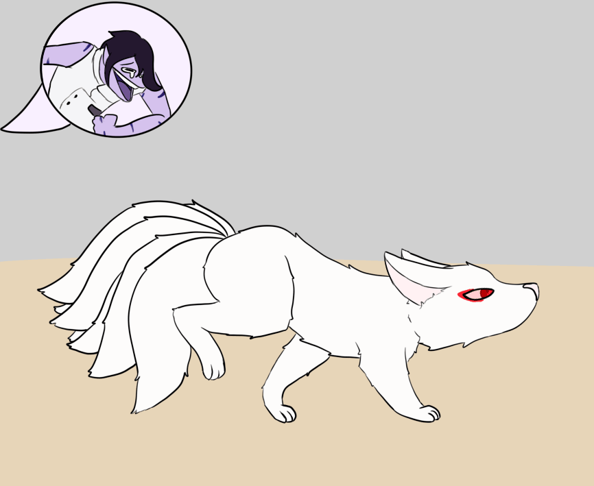
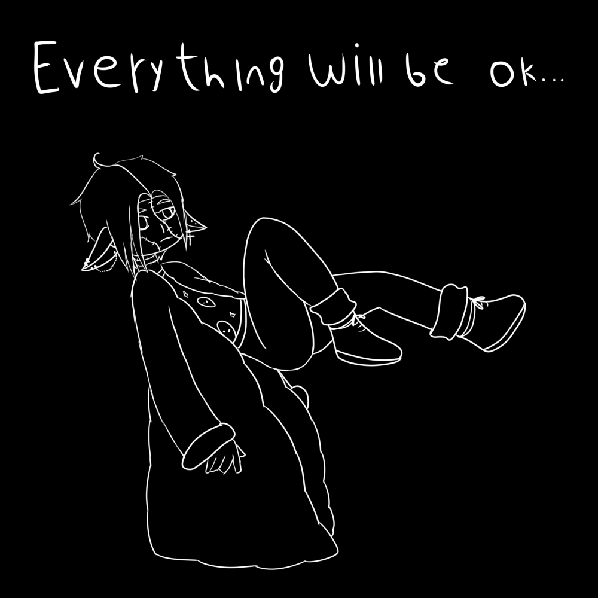
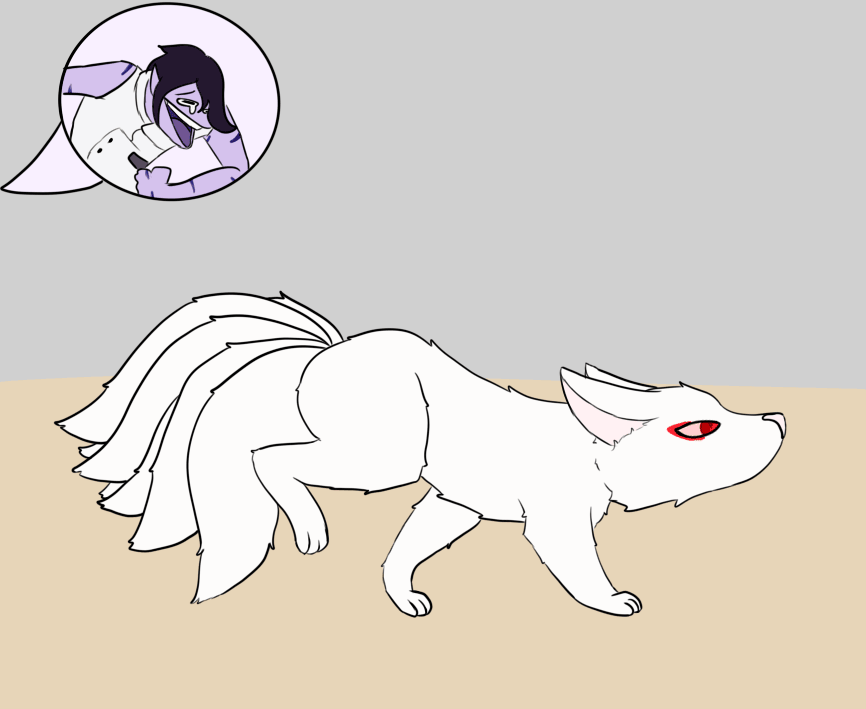
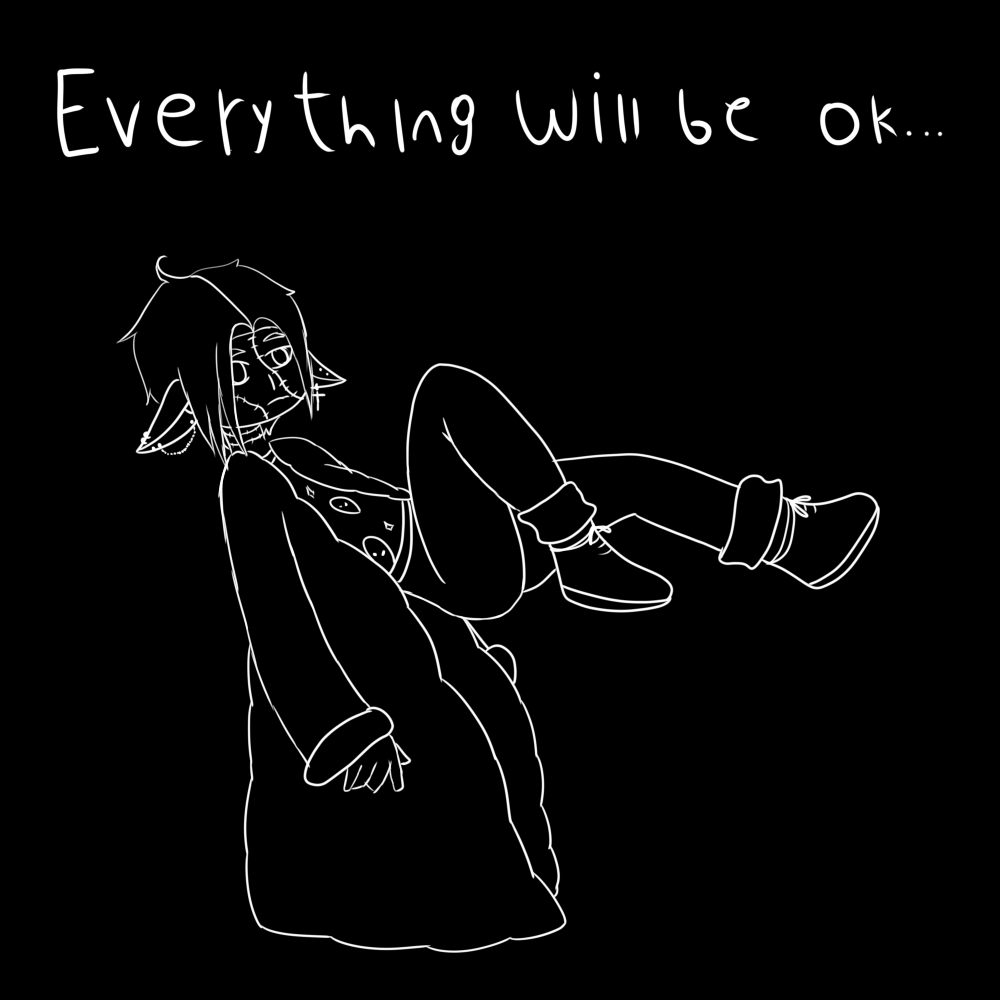

Bienvenidos a Zari design
Mi nombre es Belén, soy diseñadora e ilustradora independiente y esta es una mirada al pequeño caos que es mi creatividad.

 



Homenaje a Grete Stern hecho para la materia Fotografía en el año 2024.
Alfabeto y afiches realizados para la materia Letra experimental en el año 2024.